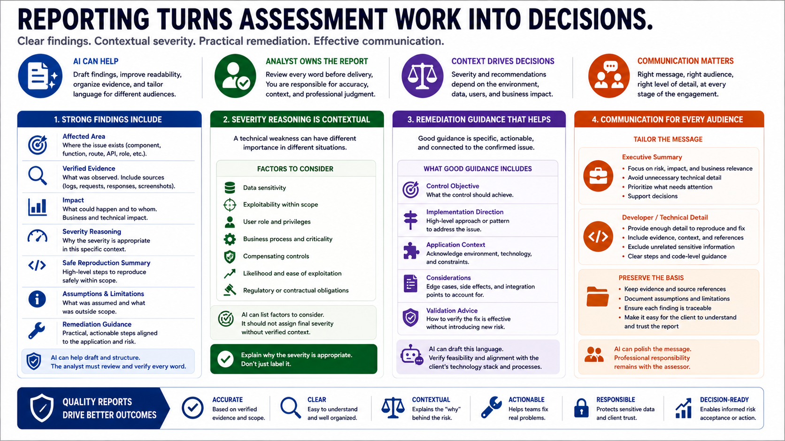

Reporting, Remediation, and Communication
Connecting to LMS... Progress: in progress

Narration
Reporting turns assessment work into decisions. AI can help draft clear findings, improve readability, organize evidence, and tailor language for different audiences. A strong finding should include the affected area, verified evidence, impact, severity reasoning, safe reproduction summary, assumptions, limitations, and practical remediation guidance. The analyst should review every word before delivery.
Severity reasoning should be tied to context. A technical weakness may be more or less important depending on data sensitivity, exploitability within scope, user role, compensating controls, and business process. AI can help list factors to consider, but it should not assign final severity without verified context. The report should explain why the severity is appropriate, not simply label it.
Remediation guidance should be practical and connected to the confirmed issue. Vague statements like fix security do not help developers. Better guidance describes the control objective, suggests implementation direction, and acknowledges application context. AI can help draft this language, but recommendations should be checked for feasibility and alignment with the client's technology stack.
Communication matters throughout the engagement. Executive summaries should describe risk and business relevance without unnecessary technical noise. Developer-focused sections should provide enough detail to support repair without exposing unrelated sensitive material. Preserve evidence and assumptions so the client can understand the basis of each finding. AI can polish the message, but the professional responsibility remains with the assessor.